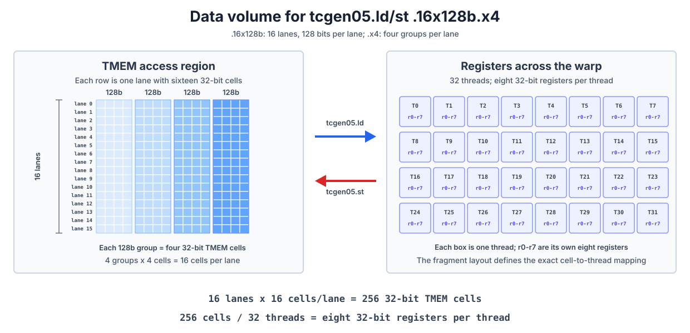

Tensor Memory (TMEM)#
Overview
TMEM is a two-dimensional address space with Lane and Column coordinates, allocated dynamically along the Column dimension.
tcgen05.allocreserves space,tcgen05.deallocreleases it, andtcgen05.relinquish_alloc_permitgives up the right to make further allocations.tcgen05.ldandtcgen05.stare warp-collective instructions. A warp’s ID within its warpgroup determines which 32 TMEM Lane positions it can access, while.shapeand.numdetermine how much data moves and how many registers each thread uses.TMEM loads and stores are asynchronous. Execute
tcgen05.wait::ldbefore using registers produced by a load, andtcgen05.wait::stbefore reusing TMEM locations touched by a store.
Earlier chapters introduced TMEM from several directions. Data Layout and Its Notation explained the TLane and TCol axes and two-dimensional layouts. Tensor Core Operand Layouts Across GPU Generations traced the accumulator and scale-factor data paths. Blackwell Tensor Core then showed how tcgen05.mma maps its result into TMEM.
We begin by recalling TMEM’s physical structure. PTX calls its two address coordinates Lane and Column; in TIRx layout notation, the corresponding axes are TLane and TCol. A TMEM Lane is an address coordinate, not a thread’s lane ID.
Each CTA has 128 positions along the Lane dimension and up to 512 positions along the Column dimension. Every (Lane, Column) cell is 32 bits. Allocating TMEM means reserving a range along the Column dimension, and every allocated column contains all 128 Lane positions.

This chapter focuses on the two remaining practical questions: how a kernel allocates and releases TMEM, and how its warps access that storage with tcgen05.ld and tcgen05.st.
The TMEM Allocation Lifecycle#
TMEM is allocated dynamically. tcgen05.alloc reserves space along the Column dimension, with legal n_cols values of 32, 64, 128, 256, or 512. Allocating one column reserves all 128 Lane positions in that column.
The following pattern appears in later TIRx kernels:
pool = T.SMEMPool()
tmem_addr = pool.alloc((1,), "uint32")
pool.commit()
if warp_id == 0:
T.ptx.tcgen05.alloc(
T.address_of(tmem_addr), n_cols=256, cta_group=1
)
tmem_addr is a 32-bit slot in SMEM. When tcgen05.alloc succeeds, it writes the base address of the allocated TMEM region into this slot. The instruction may wait for free TMEM columns, so it is a blocking instruction.
Here warp_id == 0 selects all of warp 0. tcgen05.alloc is warp-collective: all 32 threads in that warp must execute it with the same n_cols. Do not add a lane_id == 0 condition and turn it into a single-thread operation. Before other warps read tmem_addr, the kernel must also use the appropriate fence and CTA synchronization to make the allocation result visible throughout the CTA.
Once the base address is available, TIRx can declare a TMEM buffer over the allocated region:
tmem = T.decl_buffer(
(128, 256),
"float32",
scope="tmem",
allocated_addr=tmem_addr[0],
layout=TileLayout(
S[(128, 256) : (1@TLane, 1@TCol)]
),
)
allocated_addr binds the buffer to the address returned by tcgen05.alloc. The layout maps logical coordinate (m,n) to TMEM TLane and TCol. Later code can refer to the logical element as tmem[m,n], while the layout handles the hardware coordinates.
Allocation-Size Restrictions#
If one CTA performs several allocations in program order, a later allocation cannot request more columns than an earlier one. For example:
256 columns -> 128 columns valid
128 columns -> 256 columns invalid
The kernel must therefore determine its largest TMEM requirement when it designs the allocation sequence rather than expanding the allocation later.
When the storage is no longer needed, the kernel performs two operations:
if warp_id == 0:
T.ptx.tcgen05.dealloc(tmem_addr[0], n_cols=256, cta_group=1)
T.ptx.tcgen05.relinquish_alloc_permit(cta_group=1)
tcgen05.dealloc releases the allocated columns. Every TMEM allocation must be explicitly released before the kernel exits. tcgen05.relinquish_alloc_permit declares that the CTA will make no further TMEM allocations; after it executes, the CTA cannot call tcgen05.alloc again. Before cleanup begins, the kernel must ensure that asynchronous MMA, load, store, and other operations touching TMEM have completed.
Allocation with cta_group::2#
cta_group::1 involves only the current CTA, so one warp in that CTA performs the allocation and deallocation. With cta_group::2, one warp on each side of the CTA pair must execute the same tcgen05.alloc or tcgen05.dealloc; the side that arrives first may wait for its peer.
The peer CTA must therefore have launched and eventually participate in these collective operations. Within one kernel, all tcgen05 instructions carrying a cta_group qualifier must also use the same value. A kernel cannot allocate TMEM with cta_group::2 and then access it with cta_group::1 forms of tcgen05.mma or tcgen05.commit.
Which TMEM Lanes Each Warp Can Access#
TMEM belongs to the CTA, but tcgen05.ld and tcgen05.st do not give every warp access to all 128 Lane positions. The four warps in a warpgroup each access a fixed window of 32 TMEM Lane positions:
Warp ID within the warpgroup |
Accessible TMEM Lane positions |
|---|---|
0 |
0-31 |
1 |
32-63 |
2 |
64-95 |
3 |
96-127 |
All four warps can access every TMEM column; only their Lane windows differ. Reading an accumulator that spans all 128 Lane positions therefore requires four warp-level accesses, one for each window. This is the concrete meaning of the “warpgroup reads TMEM” shorthand used in earlier chapters.
How tcgen05.ld and tcgen05.st Move Data#
tcgen05.ld loads data from TMEM into registers, and tcgen05.st moves it in the opposite direction. Both are warp-collective instructions: every thread in the warp executes the same instruction and supplies the same TMEM address operand, [taddr]. The hardware uses each thread’s lane ID to distribute the access among its registers, or to place those registers back into the corresponding TMEM cells.
The following figure uses an m8n8-style register fragment to illustrate both directions. This is only one local mapping supported by tcgen05.ld/st; the actual data movement depends on .shape, .num, and the optional .pack::16b or .unpack::16b qualifier.

Shape and Repeat Factor#
The amount of data moved by one load or store comes from .shape and .num. .shape specifies how many TMEM lanes participate and the base amount of data taken from each lane. .num repeats that amount. For example:
tcgen05.ld.sync.aligned.16x128b.x4.b32
{r0, r1, r2, r3, r4, r5, r6, r7}, [taddr]
The next figure expands this instruction from left to right. Each horizontal row on the left is one TMEM lane. The four blue groups in a row correspond to the four repetitions selected by .x4. Each group contains four cells, representing the 128 bits in .16x128b; one small cell is one 32-bit TMEM cell.

The left side therefore contains
16 lanes × 4 groups/lane × 4 cells/group
= 256 32-bit TMEM cells
The 32 boxes on the right represent the 32 threads in the warp. The r0-r7 inside each box are that thread’s own eight 32-bit registers. tcgen05.ld distributes the 256 cells among those registers, giving each thread
256 cells / 32 threads = 8 32-bit registers/thread
tcgen05.st moves the same amount of data in the opposite direction. The figure counts data volume only; the instruction’s fragment mapping still determines which TMEM cell corresponds to which register slot in which thread.
Changing .x4 to .x1 leaves only one 128-bit group in each lane. The instruction then moves 16 × 1 × 4 = 64 cells, which gives each of the 32 threads two 32-bit registers.
Instruction form |
Data per lane |
Registers per thread |
|---|---|---|
|
128 bits |
2 |
|
256 bits |
4 |
|
512 bits |
8 |
|
1024 bits |
16 |
This data-movement shape is different from the M × N × K instruction shape of MMA. The MMA shape gives the logical dimensions of the matrix multiplication. Here, .shape describes the hardware movement between TMEM and registers. The register fragments in Tensor Core Operand Layouts Across GPU Generations explain how those registers map back to logical matrix elements.
Packing and Unpacking 16-Bit Data#
Each TMEM cell and each register operand of tcgen05.ld/st is 32 bits, but a kernel may manipulate 16-bit pieces of data. On tcgen05.ld, .pack::16b combines two 16-bit pieces from adjacent TMEM columns into one 32-bit register. On tcgen05.st, .unpack::16b splits one 32-bit register into two 16-bit pieces and writes them to adjacent TMEM columns.
Packing and unpacking change only how data is organized while moving between TMEM and registers. They do not change the allocation unit: TMEM is still allocated along the Column dimension, and every allocated column still contains all 128 Lane positions.
Waiting for Asynchronous Loads and Stores#
tcgen05.ld and tcgen05.st are asynchronous. After a load, execute tcgen05.wait::ld before using the destination registers. After a store, use tcgen05.wait::st before relying on the write being complete. Each wait covers all earlier tcgen05.ld or tcgen05.st operations issued by the current thread, respectively.
If another thread or warp will consume the data, waiting for the asynchronous operation is not enough by itself. The kernel also needs thread synchronization and the appropriate tcgen05.fence to establish ordering across threads.
The SMEM-to-TMEM instruction tcgen05.cp uses a different set of shapes and a different completion mechanism. Its role in moving scale factors for block-scaled MMA was covered in Tensor Core Operand Layouts Across GPU Generations and Blackwell Tensor Core, so we will not repeat it here.
When reading a kernel that uses TMEM, check four things in order: how many columns it allocates and releases, which Lane window the current warp may access, how many registers the .shape and .num of each ld/st produce, and whether the corresponding asynchronous operation has completed. Together, these checks connect TMEM’s resource lifetime, data layout, and synchronization protocol.